bosses:aetherion2
- body-drift (walk): 4 frames well off the state's body height: 2:139% 3:126% 6:146% 7:128%
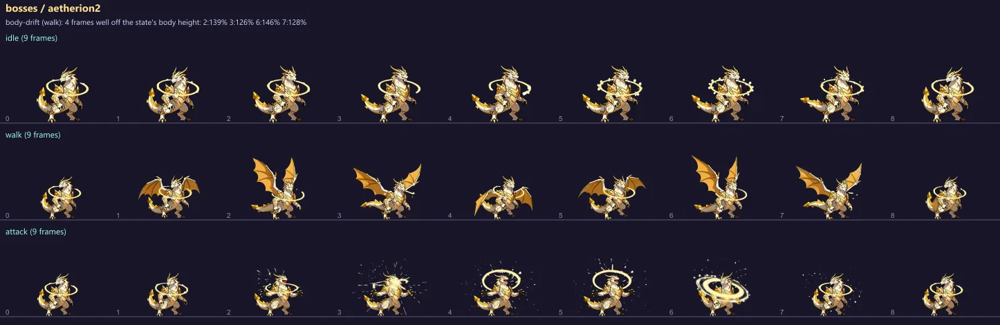
npc:coach_stride
- body-drift (idle): 3 frames well off the state's body height: 0:68% 1:61% 2:61%
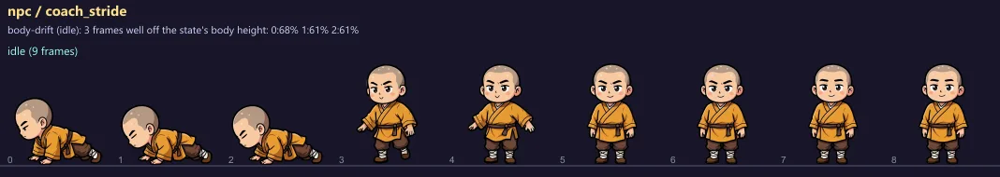
bosses:towerArbiter
- body-drift (walk): 3 frames well off the state's body height: 0:73% 7:73% 8:73%
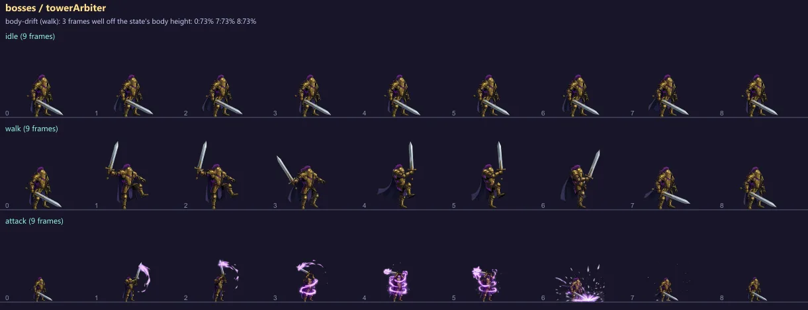
bosses:aetherion
- state-size (attack): attack body height is 148% of the idle's (state median 167%; calib s 1.6, idle s 1.58) -> calib s 1.08 would match
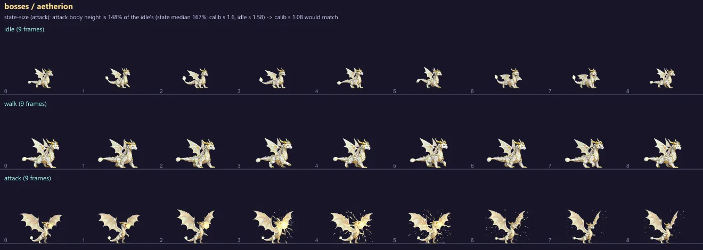
bosses:cancer
- state-size (walk): walk body height is 73% of the idle's (state median 73%; calib s 1) -> calib s 1.37 would match
- state-size (attack): attack body height is 70% of the idle's (state median 75%; calib s 1) -> calib s 1.43 would match
- body-drift (idle): 2 frames off the state's body height: 0:75% 8:74%
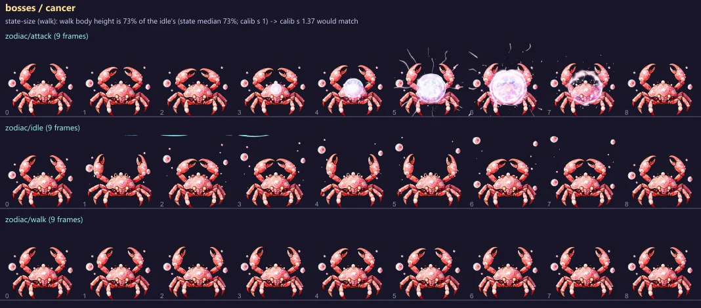
monsters:conductorMech
- state-size (attack): attack body height is 59% of the idle's (state median 59%; calib s 1) -> calib s 1.69 would match
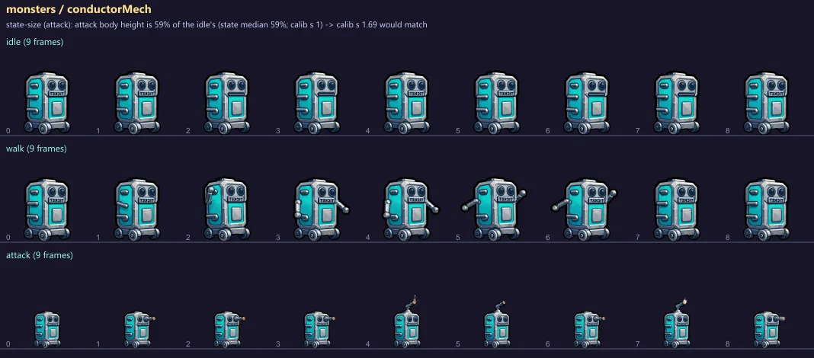
monsters:echoKnight
- state-size (attack): attack body height is 47% of the idle's (state median 52%; calib s 1) -> calib s 2.11 would match
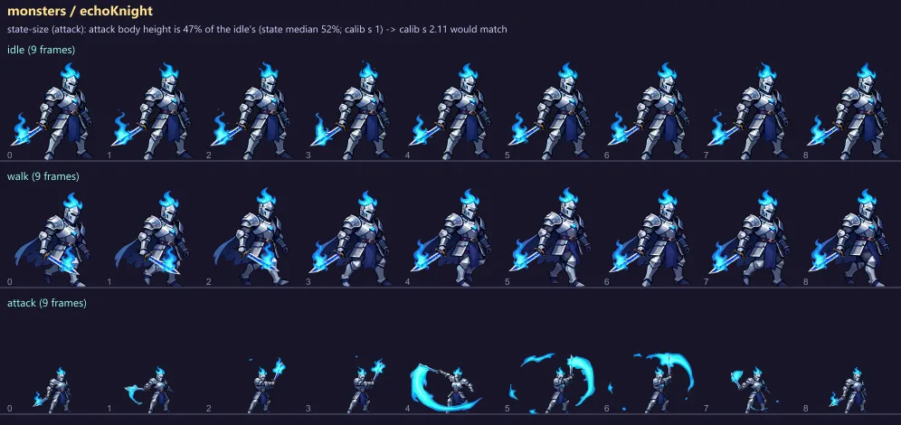
monsters:forgewight
- state-size (attack): attack body height is 43% of the idle's (state median 47%; calib s 1.26) -> calib s 2.90 would match
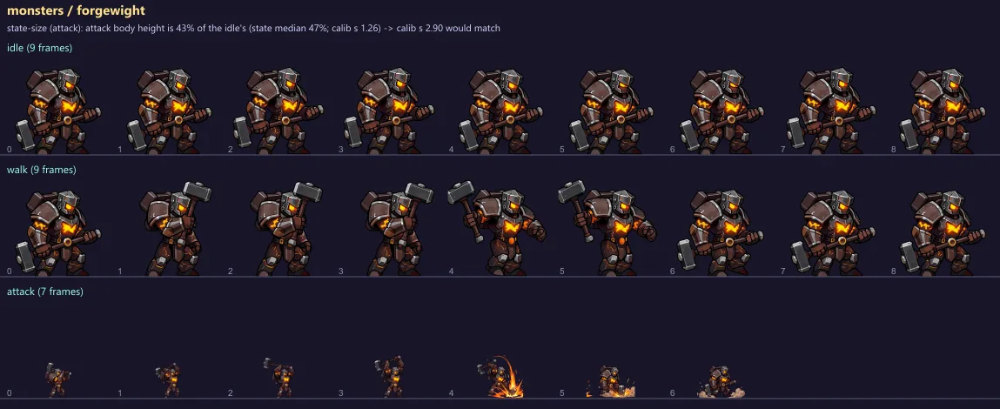
monsters:ossuaryTyrant
- state-size (attack): attack body height is 72% of the idle's (state median 76%; calib s 1) -> calib s 1.40 would match
- body-drift (idle): 2 frames off the state's body height: 0:75% 1:75%
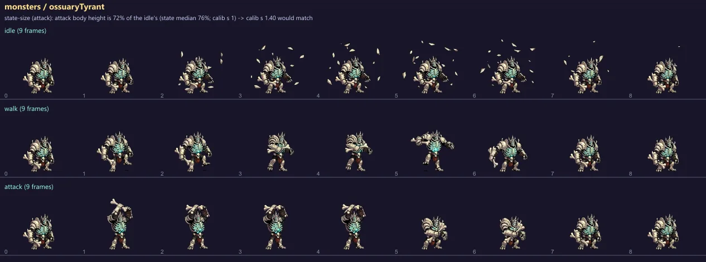
monsters:pathsBane
- state-size (attack): attack body height is 29% of the idle's (state median 29%; calib s 1) -> calib s 3.42 would match
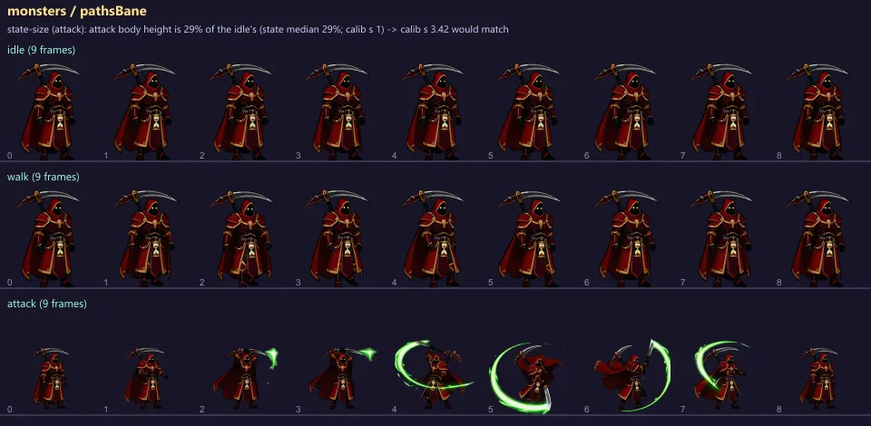
monsters:tombKeeper
- state-size (attack): attack body height is 44% of the idle's (state median 46%; calib s 1) -> calib s 2.29 would match
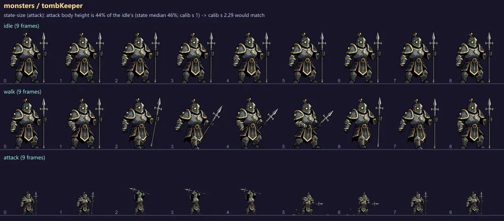
monsters:bellowsbat
- body-drift (idle): 1 frame off the state's body height: 3:74%
- body-drift (walk): 1 frame off the state's body height: 7:68%
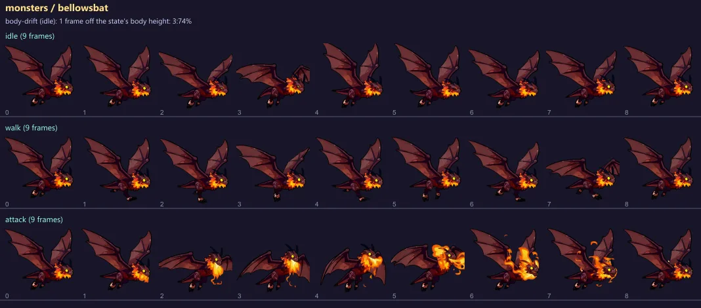
bosses:leo
- body-drift (pounce): 1 frame off the state's body height: 5:76%
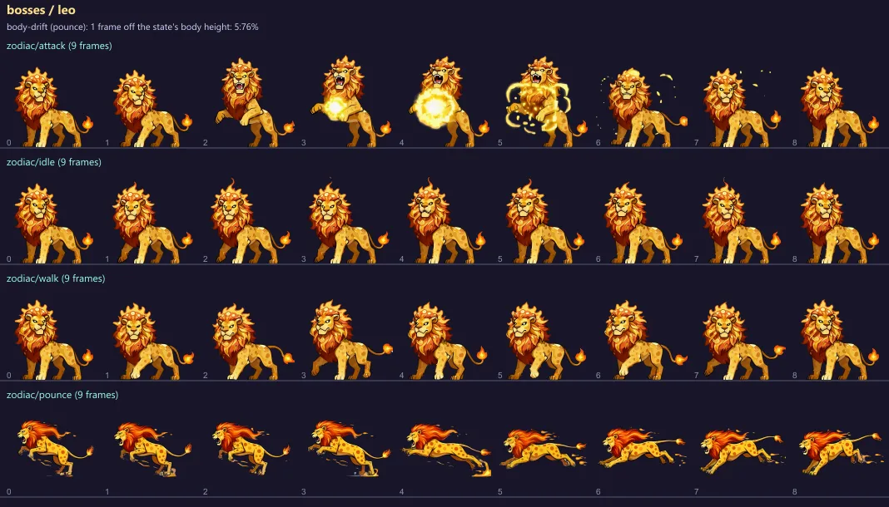
monsters:razorgale
- body-drift (walk): 2 frames off the state's body height: 2:75% 6:75%
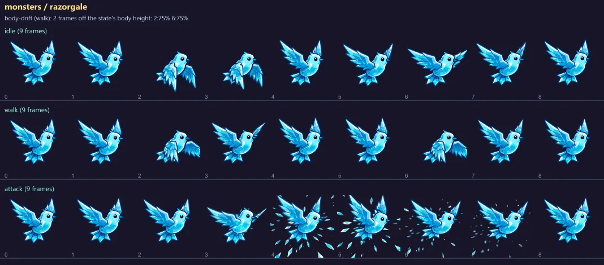
monsters:sparkling
- body-drift (walk): 1 frame off the state's body height: 7:123%
- foot-line (walk): content bottom moves 18% of the frame across the loop
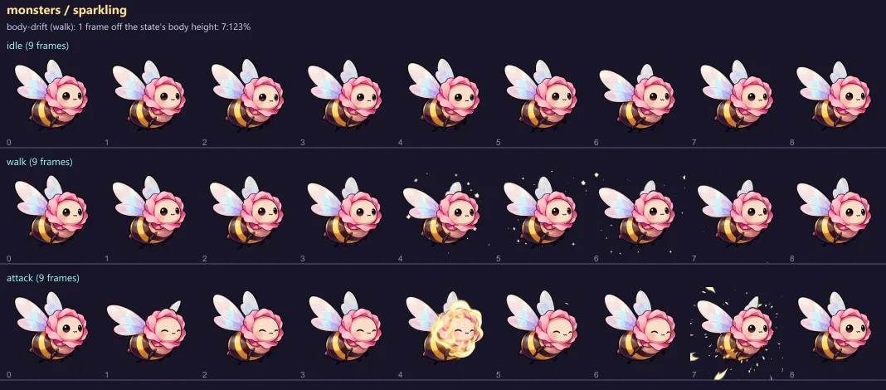
monsters:thornmaw
- body-drift (walk): 1 frame off the state's body height: 4:120%
- foot-line (walk): content bottom moves 13% of the frame across the loop
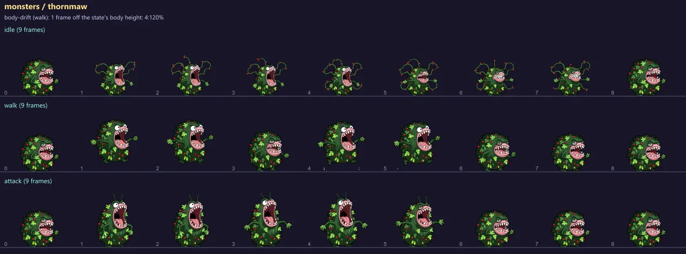
monsters:tideling
- body-drift (walk): 2 frames off the state's body height: 5:129% 6:120%
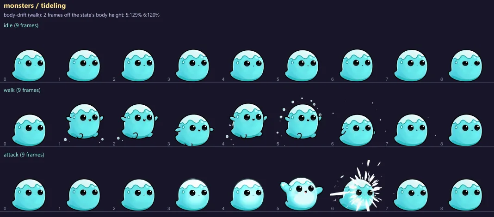
bosses:virgo
- body-drift (fly): 1 frame off the state's body height: 2:68%
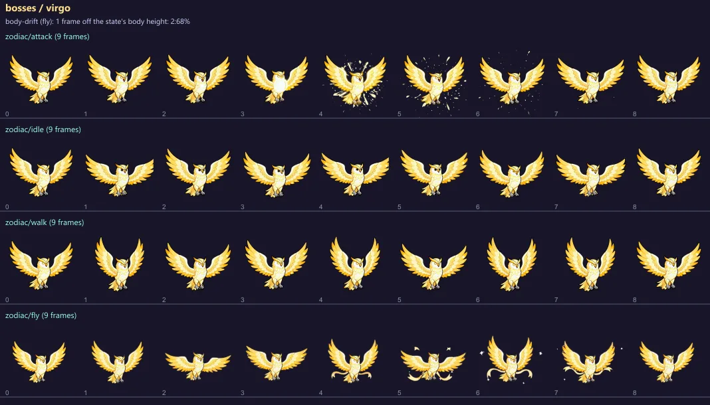
monsters:octoLegFreeze
- box-aspect (idle): idle art aspect 0.60 vs box aspect 1.33 (w 80 h 60): much taller than its box
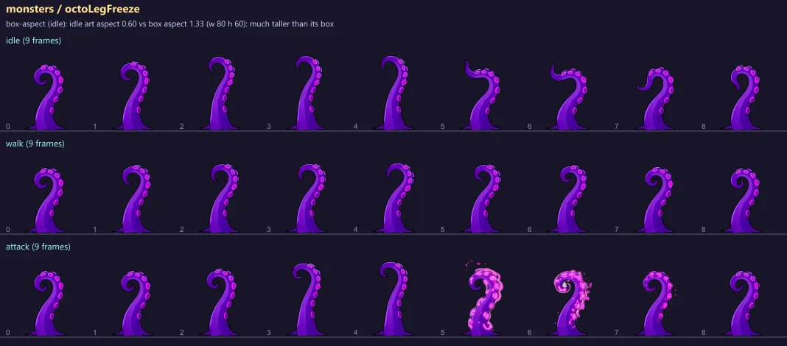
monsters:pinechad
- foot-line (walk): content bottom moves 15% of the frame across the loop
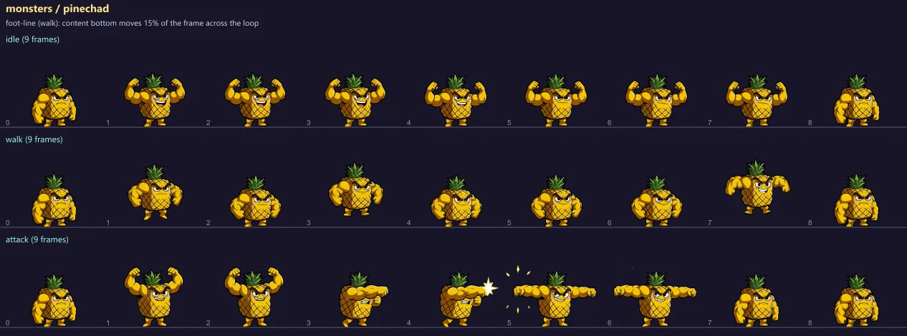
bosses:young_confused_barnaby
- foot-line (duck): content bottom moves 16% of the frame across the loop
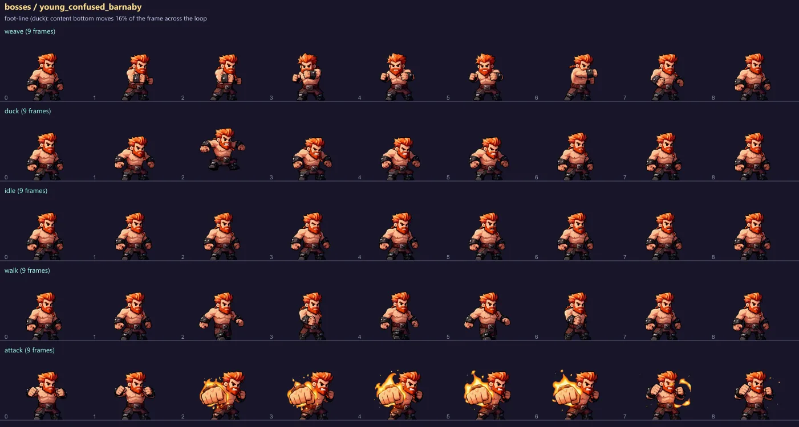